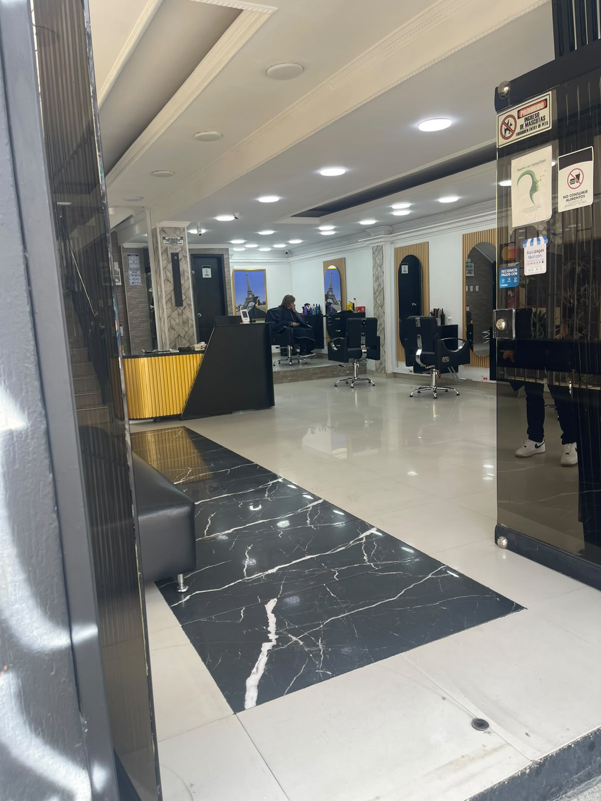
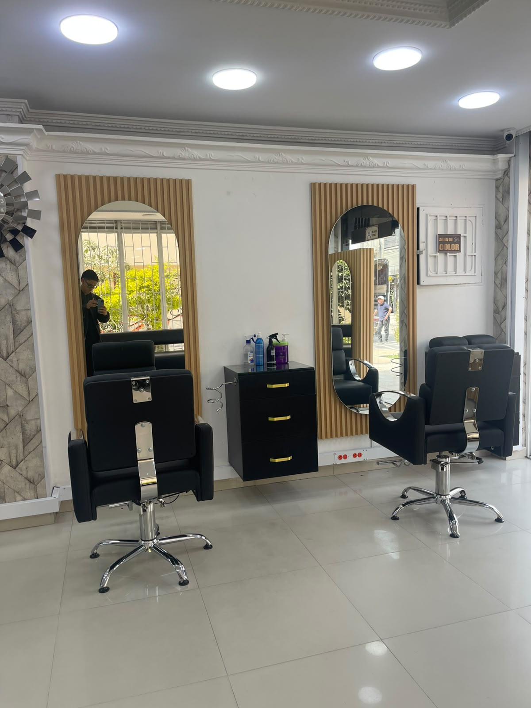
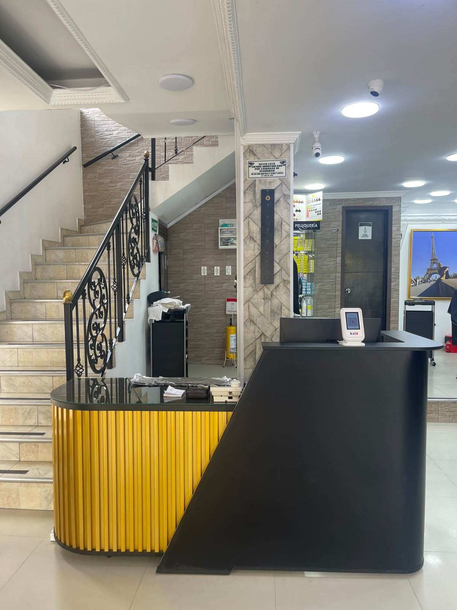

La primera vez
Los primeros cortes se hacen con calma, con risas y con papá al lado.
Nuestra historia
En Joss creemos que un buen corte le cambia el día a cualquiera: al niño que se sienta por primera vez en la silla y al abuelo que lleva toda la vida con el mismo peinado. Cada uno llega con su historia. Nosotros ponemos las manos, la técnica y las ganas.

Los primeros cortes se hacen con calma, con risas y con papá al lado.

Degradado limpio, brocha, tijera y pulso firme. Cada corte lleva nuestra firma.

Aprendemos mirando, preguntando y practicando. Los que saben enseñan y los que llegan crecen.
Te recibimos como queremos que salgas.
Práctica y oficio en cada corte.
Tu tiempo importa y lo cumplimos.
Atención premium con trato de amigo.
Un buen corte no cambia solo tu cabello: cambia cómo entras a cualquier lugar.
Joss Peluquería